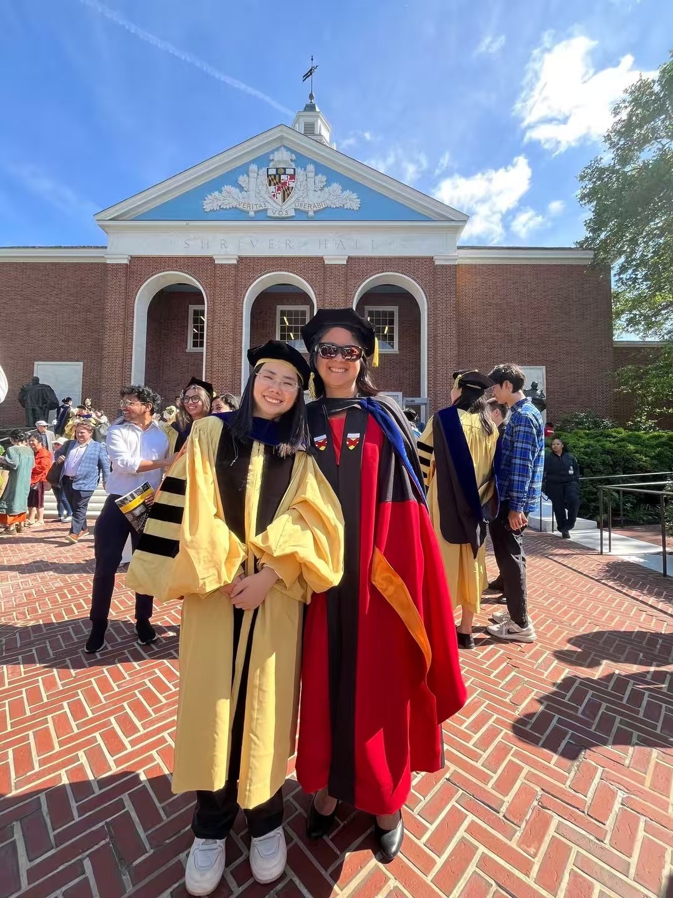
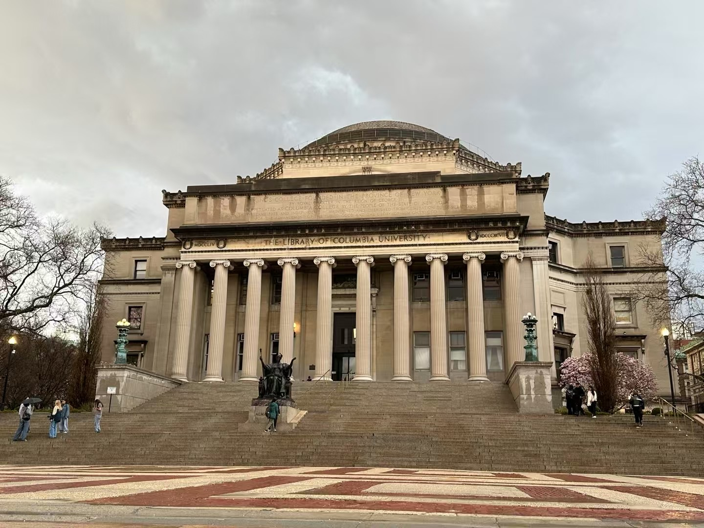

March 2026 — I was glad to give a guest lecture in Prof. Mary C. Boyce’s course Mechanics of Elastomeric Materials at Columbia University, covering fundamentals of continuum mechanics and rubber elasticity.
February 2026 — My abstract for an oral presentation at the 27th U.S. National Congress of Theoretical and Applied Mechanics (USNCTAM 2026) was accepted. I am looking forward to sharing the work, receiving feedback from researchers in solid and computational mechanics, and engaging with the broader mechanics community in Pasadena this June.
January 2026 — Our paper “Combining stretching-dominated and bending-dominated dissipation behavior to optimize energy absorption in liquid crystal elastomer-based lattice structures” was published in Journal of the Mechanics and Physics of Solids.
January 2026 — Our paper “The Anisotropic Structure and Mechanical Behavior of Films Extruded From Recycled Polypropylene” was published in Polymer Engineering and Science.
May 2025 — I returned to Johns Hopkins University for my doctoral hooding ceremony. Being hooded by my advisor was a very special moment, and it was wonderful to celebrate with friends, labmates, and mentors.

April 2025 — I officially joined Columbia University as a Postdoctoral Researcher in Mechanical Engineering.

February 2025 — I submitted my Ph.D. dissertation and received official approval from Johns Hopkins University.
January 2025 — I successfully defended my Ph.D. dissertation. I am deeply grateful to my committee, collaborators, labmates, and friends for their support throughout the journey.